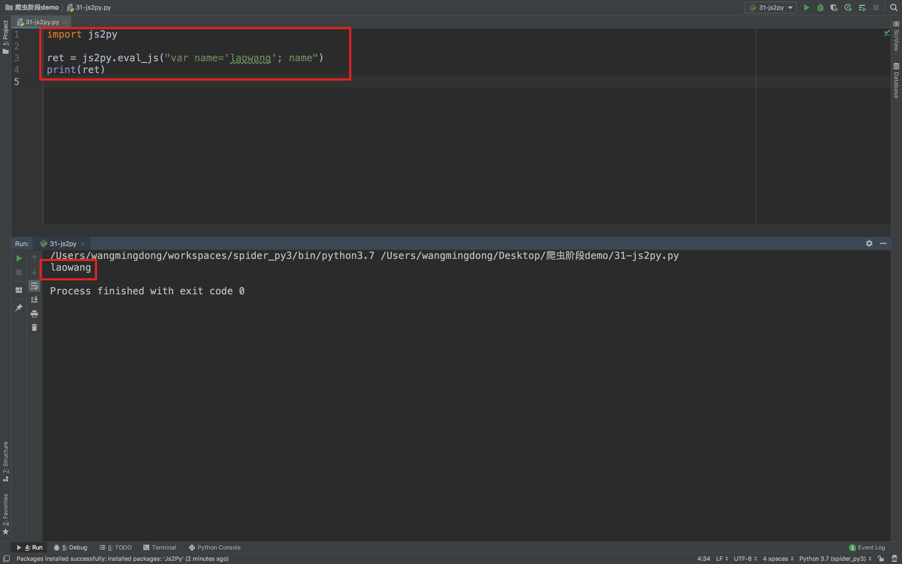
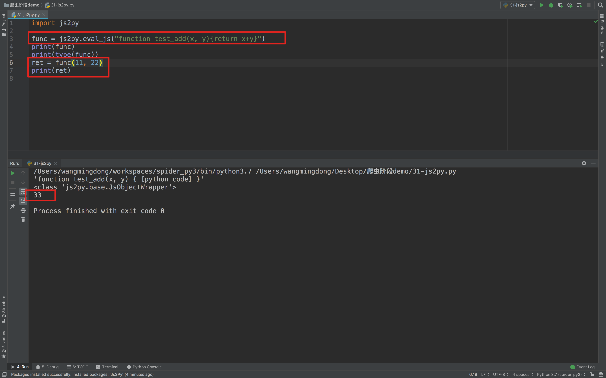
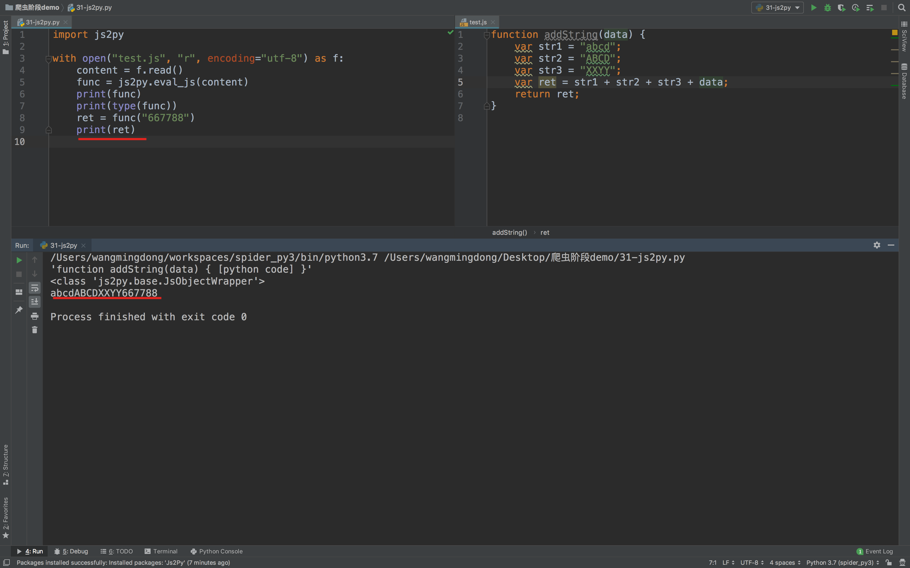

JS的解析
1. 确定js的位置
对于前面人人网的案例，我们知道了url地址中有部分参数，但是参数是如何生成的呢？
毫无疑问，参数肯定是js生成的，那么如何获取这些参数的规律呢？通过下面的学习来了解
1.1 观察按钮的绑定js事件

通过点击按钮，然后点击Event Listener，部分网站可以找到绑定的事件，对应的，只需要点击即可跳转到js的位置
1.2 通过search all file 来搜索
部分网站的按钮可能并没有绑定js事件监听，那么这个时候可以通过搜索请求中的关键字来找到js的位置，比如livecell

点击美化输出选项

可以继续在其中搜索关键字

2. 观察js的执行过程
找到js的位置之后，我们可以来通过观察js的位置，找到js具体在如何执行，后续我们可以通过python程序来模拟js的执行，或者是使用类似js2py直接把js代码转化为python程序去执行
观察js的执行过程最简单的方式是添加断点

添加断点的方式：在左边行号点击即可添加，对应的右边BreakPoints中会出现现有的所有断点
添加断点之后继续点击登录，每次程序在断点位置都会停止，通过如果该行有变量产生，都会把变量的结果展示在Scoope中
在上图的右上角有1，2，3三个功能，分别表示：
- 继续执行到下一个断点
- 进入调用的函数中
- 从调用的函数中跳出来
3. js2py的使用
在知道了js如何生成我们想要的数据之后，那么接下来我们就需要使用程序获取js执行之后的结果了
3.1js2py的介绍
js2py是一个js的翻译工具，也是一个通过纯python实现的js的解释器，github上源码与示例
3.2 安装
pip install js2py
3.4 执行思路
js的执行方式大致分为两种：
- 在了解了js内容和执行顺序之后，通过python来完成js的执行过程，得到结果
- 在了解了js内容和执行顺序之后，使用类似js2py的模块来执js代码，得到结果
但是在使用python程序重新实现js的功能，需要观察的js的每一个步骤，非常麻烦，所以更多的时候我们会选择使用类似js2py的模块去执行js，接下来我们来使用js2py实现人人网登录参数的获取
3.5 js2pydemo
js2py执行单个语句
import js2py
ret = js2py.eval_js("var name='laowang'; name")
print(ret)

js2py执行函数
import js2py
func = js2py.eval_js("function test_add(x, y){return x+y}")
print(func)
print(type(func))
ret = func(11, 22)
print(ret)

执行js文件中的js代码
test.js
function addString(data) {
var str1 = "abcd";
var str2 = "ABCD";
var str3 = "XXYY";
var ret = str1 + str2 + str3 + data;
return ret;
}
test.py
import js2py
with open("test.js", "r", encoding="utf-8") as f:
content = f.read()
func = js2py.eval_js(content)
print(func)
print(type(func))
ret = func("667788")
print(ret)

小结
- 通过在chrome中观察元素的绑定事件可以确定js
- 通过在chrome中search all file 搜索关键字可以确定js的位置
- 观察js的数据生成过程可以使用添加断点的方式观察
- js2py的使用
- 需要准备js的内容
- 生成js的执行环境
- 在执行环境中执行js的字符串，传入数据，获取结果